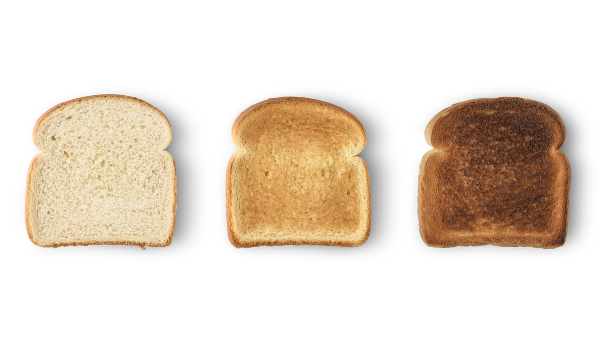

Toast! 
A Traditional way of preparing bread for consumption
Bread
Butter
Heat a pan to medium high head
Place about 1/2oz of butter into the pan and let melt
Place bread in pan and let sit until the side facing down is brown or to prefered crunchiness